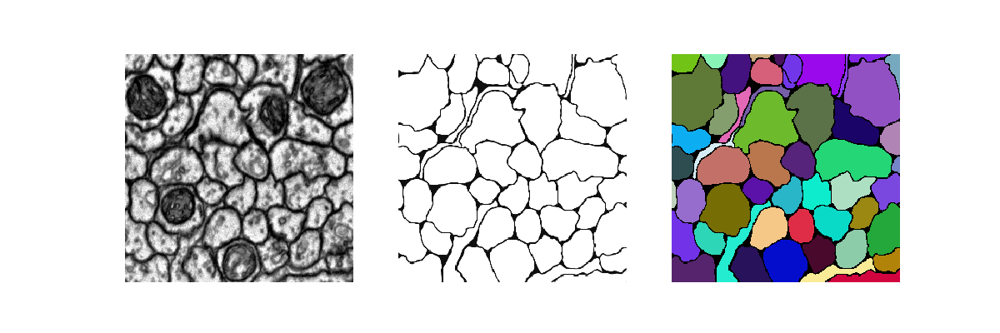

UNet is a winner of the ISBI bioimage segmentation challenge 2015.
It relies on data augmentation to use the available annotated samples more efficiently.
The architecture consists of a contracting path to capture context
and a symmetric expanding path that enables precise localization.
This application is being used as a biological example in class #1 of the course "Deep Learning by Example on Biowulf".
Allocate an interactive session and run the program. Sample session:
[user@biowulf]$ sinteractive --mem=16g --gres=gpu:v100:1,lscratch:10 -c4 [user@cn4471 ~]$module load unet [+] Loading cuDNN/8.0.3/CUDA-11.0 libraries... [+] Loading CUDA Toolkit 11.0.3 ... [+] Loading gcc 4.8.5 ... [+] Loading Qt 5.9.4 ... [+] Loading UNet 20210223 ...The bin directory of the application includes three executable files: train.py, predict.py and visualize.py. In order to display the usage message and available command line options for an executable, type its name followed by the option "-h". For example:
[user@cn4471 ~]$ train.py -h
...
usage: train.py [-h] -d data_folder [-a augmentation_rate] [-b batch_size] [--beta tversky_beta] [-c object_class]
[--cw class_weights] [--drop_rate drop_rate] [-e num_epochs] [-F start_filters] [-g num_gpus]
[--gamma tversky_gamma] [-l learning_rate] [--loss loss_type] [-n] [-s] [--save_augmented] [-v]
[-w] [-X X] [-Y Y]
optional arguments:
-h, --help show this help message and exit
-a augmentation_rate, --augmentation_rate augmentation_rate
by how many folds to increase the effective data size; default=20
-b batch_size, --bs batch_size
batch size; default=2
--beta tversky_beta class balancing weight in the Trersky index: TI = TP/(TP + beta*FP + (1-beta)*FN)
-c object_class, --object_class object_class
Detected object class(es): memb | mito | multi; default = membr
--cw class_weights Comma-separated class weights
--drop_rate drop_rate
drop rate; default=0.5
-e num_epochs, --num_epochs num_epochs
number of epochs; default=160
-F start_filters, --start_filters start_filters
num. filters used in the 1st convolution of the network model; default=64 if
object_class=membr; =8 if object_class=mito; and =48 if object_class=multi
-g num_gpus, --num_gpus num_gpus
number of gpus to use; default=1
--gamma tversky_gamma
a power in the Trersky focal loss
-l learning_rate, --lr learning_rate
learning rate; default=1.e-4
--loss loss_type loss type: bce | cce | wcce | dice | jaccard | tversky; default: wcce if object_class ==
'multi' and bce otherwise
-n, --no_augmentation
don't perform data augmentation, i.e. use original input data; default=False
-s, --summary print the model summary
--save_augmented save augmented data (in the subfolder 'augmented'
-v, --verbose increase the verbosity level of output
-w, --load_weights read weights from a checkpoint file
-X X, --image_width X
image width; should be multiple of 16; default=256
-Y Y, --image_height Y
image height; should be multiple of 16; default=256
required arguments:
-d data_folder, --data_folder data_folder
data folder name, e.g. 'data_isbi' or 'data_hhmi'
In order to run the training executable on available sample data, first compy the data to your current folder:
[user@cn4471 ~]$ cp -r $UNET_DATA/* .There are currently two sample datasets available, both comprising 2D EM images of Drosophila brain slices. The first dataset includes 30 pre-processed grayscale images together with corresponding binary masks for neural membranes from the ISBI Challenge. It comes together with the Keras UNet implementation code available at GitHub. This dataset is stored in the folder "data_isbi".
[user@cn4471 ~]$ train.py -d data_isbi Using Tensorflow backend. ... Epoch 1/100 300/300 [==============================] - 28s 92ms/step - loss: 0.6890 - acc: 0.7793 Epoch 2/100 300/300 [==============================] - 21s 71ms/step - loss: 0.6809 - acc: 0.7817 Epoch 3/100 300/300 [==============================] - 21s 71ms/step - loss: 0.6731 - acc: 0.7815 Epoch 4/100 ... Epoch 99/100 300/300 [==============================] - 21s 71ms/step - loss: 0.0979 - acc: 0.9765 Epoch 100/100 300/300 [==============================] - 21s 71ms/step - loss: 0.0965 - acc: 0.9766The trainig results, i.e. model weights, will be stored in the checkpoint file stored in the folder "checkpoints", in the HDF5 format,
checkpoints/<model_name>.<data_folder_name>.<object_class>.h5in this particular case - in the file:
checkpoints/unet.data_isbi.membr.h5.The prefix of the output checkpoint file can be changed through a command line option of the train.py.
[user@cn4471 ~]$ predict.py -d data_isbi Using TensorFlow backend. ... 30/30 [==============================] - 2s 81ms/step ...For each the grayscale image file i.png (i=0,1,...,29), this command will produce a binary mask i_predict.png together with an RGB image i_predict_RGB.png with colored the connected components of the binary image.
[user@cn4471 ~]$ visualize.py -h
usage: visualize.py [-h] [-c object_class] [-d data_folder] [-i image_path] [-n image_id]
optional arguments:
-h, --help show this help message and exit
-c object_class, --object_class object_class
Detected object class(es): membr | mito | multi; default = membr
-d data_folder, --data_folder data_folder
path to the top data folder
-i image_path, --image image_path
a path to the image to be visualized
-n image_id, --image_id image_id
a number in the range(num_images)
Here, either the option -i or -n is required. For example, to visualize the 0-th data item, type:
[user@cn4471 ~]$ visualize.py -n 0 -d data_isbi

[user@cn4471 ~]$ train.py -d data_hhmi Using TensorFlow backend. ... Epoch 1/100 300/300 [==============================] - 31s 104ms/step - loss: 0.1928 - acc: 0.9111 Epoch 2/100 300/300 [==============================] - 22s 72ms/step - loss: 0.1388 - acc: 0.9335 Epoch 3/100 300/300 [==============================] - 21s 71ms/step - loss: 0.1269 - acc: 0.9395 ... Epoch 159/160 240/240 [==============================] - 17s 72ms/step - loss: 0.0351 - acc: 0.9856 Epoch 160/160 240/240 [==============================] - 17s 72ms/step - loss: 0.0349 - acc: 0.9856This command will produce a checkpoint file hhmi.membrane.h5 in folder "checkpoints".
[user@cn4471 ~]$ cp -r $UNET_DATA/checkpoints .Now we can run the executable predict.py:
[user@cn4471 ~]$ predict.py -d data_hhmi Using TensorFlow backend ... 24/24 [==============================] - 2s 98ms/step ... [user@cn4471 ~]$ visualize.py -n 1 -d data_hhmi
[user@cn4471 ~]$ train.py -d data_hhmi -c mito ... [user@cn4471 ~]$ predict.py -d data_hhmi -c mito ... [user@cn4471 ~]$ visualize.py -n 1 -d data_hhmi -c mito
[user@cn4471 ~]$ exit [user@biowulf ~] sinteractive --mem=16g --gres=gpu:v100:4,lscratch:40 -c14 [user@cn4471 ~]$ module load unet [user@cn4471 ~]$ cp -r $UNET_DATA/* . [user@cn4471 ~]$ train.py -d data_isbi -g 4 -b 8 Using TensorFlow backend. ... StreamExecutor with strength 1 edge matrix: 2019-04-23 07:38:17.419226: I tensorflow/core/common_runtime/gpu/gpu_device.cc:988] 0 1 2 3 2019-04-23 07:38:17.419241: I tensorflow/core/common_runtime/gpu/gpu_device.cc:1001] 0: N Y N N 2019-04-23 07:38:17.419252: I tensorflow/core/common_runtime/gpu/gpu_device.cc:1001] 1: Y N N N 2019-04-23 07:38:17.419262: I tensorflow/core/common_runtime/gpu/gpu_device.cc:1001] 2: N N N Y 2019-04-23 07:38:17.419271: I tensorflow/core/common_runtime/gpu/gpu_device.cc:1001] 3: N N Y N ... Epoch 1/160 18/18 [==============================] - 28s 2s/step - loss: 0.6806 - acc: 0.7497 Epoch 2/160 18/18 [==============================] - 11s 588ms/step - loss: 0.5285 - acc: 0.7811 Epoch 3/160 18/18 [==============================] - 11s 590ms/step - loss: 0.4687 - acc: 0.7814 ...End the interactive session:
[user@cn4471 ~]$ exit salloc.exe: Relinquishing job allocation 46116226 [user@biowulf ~]$
Create a batch input file (e.g. unet.sh). For example:
#!/bin/bash module load unet cp -r $UNET_DATA/* . train.py -e 100 -l 0.0001
Submit this job using the Slurm sbatch command.
sbatch [--cpus-per-task=#] [--mem=#] unet.sh